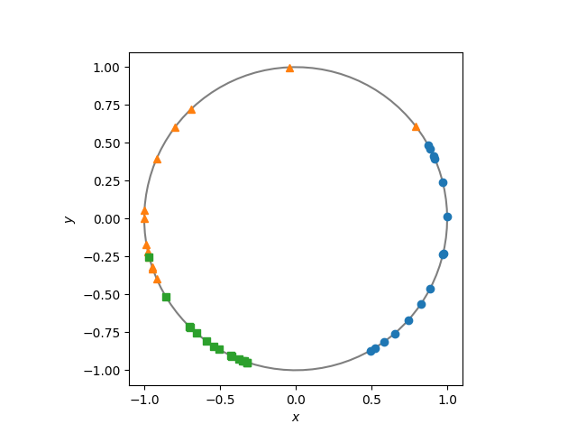
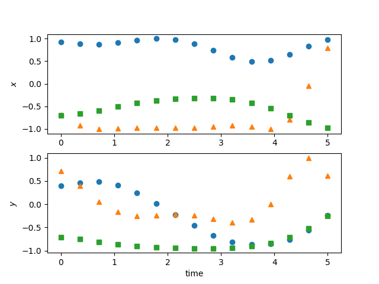

Note
Click here to download the full example code
MLFM Simulation¶
This note describes the process of simulating the MLFM using any of the classes extending BaseMLFM, this tutorial demonstrates the simulation process using this base class, but in practice it is the child classes along with their extended methods which will be most useful.
Basic Model Setup¶
The MLFM is specifed by describing a set of \(K \times K\) square matrices \(A_0, A_1, \ldots,A_R\). We refer to the first matrix \(A_0\) as the offset and by default in initalisation of BaseMLFM is taken to be zero and so we need only pass the set \(A_1, \ldots, A_R\) to the argument struct_mats. Therefore to construct the ODE on the circle \(S^1\) given by
we need to define the skew-symmetric matrix \(L_1\) above, this can be done manually or by importing the liealgebras. The following code block is enough to set up this model
import numpy as np
import matplotlib.pyplot as plt
from pydygp.linlatentforcemodels import BaseMLFM
from pydygp.liealgebras import so
# equivalent to L1 = np.array([[0., -1.], [1., 0.]]),
L1 = so(2)
mlfm = BaseMLFM(L1, R=1)
Choice of kernel function¶
Because we have not specified the lf_kernel argument in the
initialisation of the MLFM object it will default to the Radial basis function
kernel with multiplicative scale parameter given by
This package has the scikit-learn parackage as a requirement and so we have the luxury of being able to chose from any of the prexisting kernel functions implemented in that package. The defaul behaviour is to use the RBF kernel above so that the following are equivalent
from sklearn.gaussian_process.kernels import ConstantKernel, RBF
kern = ConstantKernel() * RBF() # equiv. to 1 * RBF()
mlfm1 = BaseMLFM(L1, R=1) # These two models
mlfm2 = BaseMLFM(L1, lf_kernels=(kern, )) # are the same
Simulation¶
For the simple model on the unit circle we have described above it is possible to simulate directly, this is not going to be true in general and so the :function:`.BaseMLFM.sim` implements a more general approach which may be described as
- Simulate a dense realisation from the set of latent GPs
- Interpolate simulated GP draws with a cubic spline
- Use the smooth interpolating functions in a numerical ODE solver
In 1. we need to simulate the GP at a set of points dense enough so as to ensure that the conditional variance between the points is neglible and so treat the function as being given exactly by the predicted mean. In principle we could then pass the conditional mean function to the ODE integration routine, but the predicted mean requires evaluating the kernel at the whole set of dense points points and so in practice it is more efficent to replace them with a spline approximation which is quicker to evaluate. We also need the smoothly interpolated functions because the :module:`odeint` routine uses adaptive methods so we cannot guarantee beforehand the set of time points at which the evolution equation will be evaluated.
The simulation function returns the data at the requested set of points, and also the interpolating functions used to estimate the ODE.
tt = np.linspace(0., 5., 15)
beta = np.array([[0.,],
[1.,]])
fig1, ax1 = plt.subplots()
fig2 = plt.figure()
ax2 = fig2.add_subplot(211)
ax3 = fig2.add_subplot(212)
# plot the circle
theta = np.linspace(0., 2*np.pi, 100)
x, y = np.cos(theta), np.sin(theta)
ax1.plot(x, y, 'k-', alpha=0.5)
# simulate different realisations of the process
for symb in ['o', '^', 's']:
# random initioal condition for each sim.
x0 = np.random.normal(size=2)
x0 /= np.linalg.norm(x0)
Y, _ = mlfm.sim(x0, tt, beta)
ax1.plot(Y[:, 0], Y[:, 1], symb)
ax2.plot(tt, Y[:, 0], symb)
ax3.plot(tt, Y[:, 1], symb)
ax1.set_xlabel('$x$')
ax1.set_ylabel('$y$')
ax1.set_aspect('equal')
ax2.set_ylabel('$x$')
ax3.set_ylabel('$y$')
ax3.set_xlabel('time')
- 
- 
Total running time of the script: ( 0 minutes 0.094 seconds)